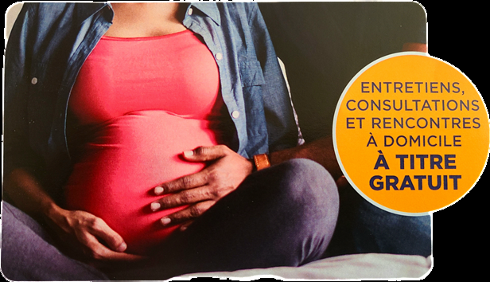
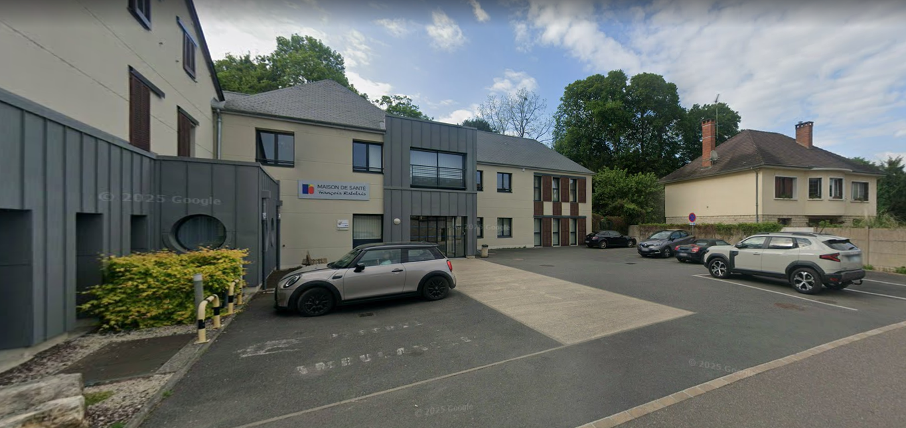

L'arrivée d'un enfant
"Chaque parent vient au monde en même temps que son premier enfant." - Ernst Kramer
Démarches avant l'arrivée de l'enfant
État civil et droits
Santé
Emploi
Accompagnement périnatal
Pendant votre grossesse et après l'accouchement, plusieurs professionnels et structures sont à votre écoute pour vous accompagner et vous soutenir. Voici les ressources disponibles près de chez vous.
Structures médicales
Hôpital de Gien
Centre Hospitalier du Giennois
Rue Wiltzer, 45500 GIEN
📞 02 38 67 61 00
Maternité conventionnée pour votre suivi et votre accouchement.
Protection Maternelle et Infantile (PMI)
10 rue Jean Mermoz, 45500 GIEN
📞 02 38 05 61 61
Consultations médicales gratuites avant et après la naissance. Gratuit et ouvert à tous, la PMI est un service de santé publique géré par le département.
Il existe plusieurs centres de PMI pour être au plus proche des familles. Ils accueillent les (futurs) parents et les enfants de moins de 6 ans. On peut y faire suivre sa grossesse et bénéficier d’un accompagnement personnalisé en pré et postnatal. Après la naissance, la PMI peut également réaliser le suivi médical de l’enfant. On peut aussi participer à des ateliers en groupe organisés à la PMI.
La sage-femme de PMI du Loiret peut :
• réaliser le suivi médical et psycho-social de la grossesse ainsi que les entretiens pré et postnataux précoces
• accompagner et soutenir la femme/le couple dans leurs vulnérabilités médico-psycho-sociales
• proposer des séances de préparation à la naissance et à la parentalité en individuel ou en couple
• accompagner la femme dans les suites de couches et proposer une contraception adaptée
• animer des actions organisées par la PMI (alimentation pendant la grossesse, allaitement, groupe de paroles…)
• établir des liens avec les partenaires pour offrir aux futurs parents une prise en charge adaptée à leur situation.

Professionnels en libéral
Sage-femme - Patricia Philippart
Maison de Santé François Rabelais
24 Rue du Glacis
CHÂTILLON-SUR-LOIRE
📞 02 38 31 25 85
Suivi de grossesse, accompagnement à l'accouchement et suivi postnatal en toute confiance. La sage-femme joue un rôle crucial dans le domaine de la périnatalité, offrant un soutien essentiel aux femmes avant, pendant et après la grossesse. Sa mission ne se limite pas à l'assistance lors de l'accouchement ; elle inclut également la préparation à la naissance, l'éducation prénatale et le suivi postnatal.
Les sages-femmes sont formées pour reconnaître les signes de complications potentielles et pour intervenir de manière appropriée, garantissant ainsi la sécurité et le bien-être de la mère et de l'enfant.
De plus, elles fournissent des conseils précieux sur l'allaitement, la nutrition, et l'adaptation émotionnelle à la parentalité. En tant que professionnelles de santé de confiance, elles contribuent à créer un environnement rassurant pour les nouvelles familles, favorisant un début de vie serein et sain pour le nouveau-né.

Maison de Santé
Châtillon-sur-Loire
Accompagnement émotionnel
Les doulas vous offrent un soutien personnel, émotionnel et pratique tout au long de votre périnatalité, en complément des soins médicaux. Son rôle est de créer un environnement apaisant, réduire le stress et l'anxiété, et offrir une écoute bienveillante. Des études montrent que la présence d'une doula peut améliorer l'expérience d'accouchement et réduire les risques de complications.
MVB Doula
Marjorie Vatan-Bagryianik
BRIARE
📞 06 42 21 42 28
Hera Doula
Victoire Jacquot
CHÂTILLON-SUR-LOIRE
📞 06 26 07 54 63
Recherche d'un mode de garde
Guichet Unique de la Petite Enfance

Vous êtes parent ou sur le point de le devenir ?
Vous recherchez un mode de garde / d’accueil pour votre enfant âgé de 0 à 4 ans ?
Bénéficiez d’un accompagnement individualisé, sur rendez-vous, pour votre recherche d’un mode d’accueil .
Le Guichet Unique de la Petite Enfance (animé par le Relais Petite Enfance) a pour mission d’informer les parents et futurs parents sur les différents modes d’accueil disponibles. Il s’engage également à les accompagner dans leurs démarches.
Mar, Jeu 13h30-17h, Mer 9h-12h30 au Pôle Petite Enfance
39 avenue Yver-Bapterosses, 45250 Briare
📞 02 38 36 78 73
Lun, Ven 13h30-16h30, au Centre Médico-Social
1 rue de la Boyaudière, 45360 Châtillon-sur-Loire
📞 02 38 37 23 74